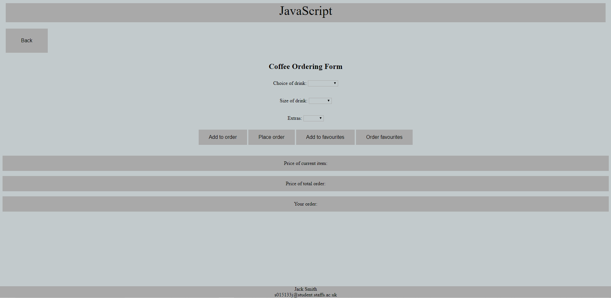
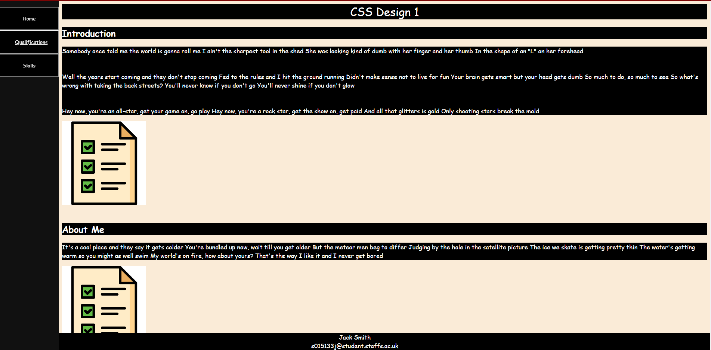
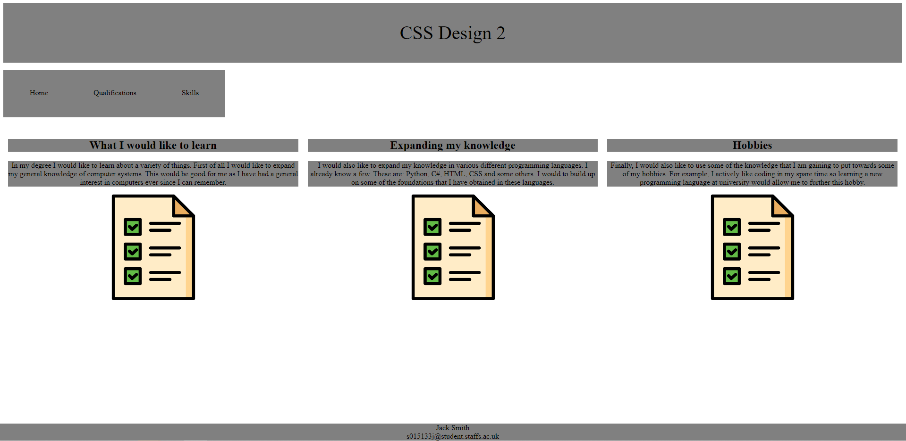

CSS and ECMAScript
CSS stands for Cascading Style Sheet and is a style sheet language used for describing the presentation of a document written in a markup language. ECMAScript, also known as JavaScript is a programming language commonly used in web development
ECMAScript Showcase
This is a page that is designed to showcase the use of ECMAScript by creating a coffee ordering form, purely out of ECMAScript.
CSS Showcase 1
In this design I have tried to change the overall theme of the page by changing colours and the layout. The navigation bar should now be on the side with an animtion.
CSS Showcase 2
In this design I have tried to lay the contents out in a column order, aswell as added an animation upon loadup for the web page. There are also different colours for the background and text.